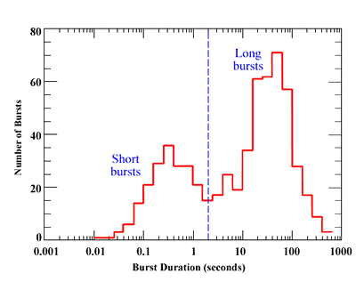

Like fingerprints, no two gamma ray bursts (GRBs) are the same, but they can be broadly classified as either long or short depending on burst duration. Long bursts are more common and last for between 2 seconds and several minutes, while short bursts last less than 2 seconds and can be all over in only milliseconds.
This segregation appears to have some basis in other readily observed properties of GRBs as well. Short bursts tend to be dimmer by a factor of 10 and have more highly-energetic (hard) gamma rays than their long burst counterparts. It also appears that the conversion of energy into gamma rays decreases as the burst progresses, unlike long bursts where the energy conversion appears to remain constant throughout the burst. It was originally thought that all short bursts were dark bursts (those with no associated optical transient), but recent observations obtained within a minute of the detection of the gamma rays have shown that at least some short bursts have an afterglow which fades extremely rapidly.
That GRBs can be divided in this way suggests that perhaps long and short bursts arise from different progenitor systems. There is now conclusive proof that at least some GRBs are associated with the core-collapse of massive stars in hypernova explosions. Many suggestive hypernova-GRB connections have also been made based on the re-brightening of the light curve of the optical transient, and in all cases the GRBs associated with these objects were long bursts. This is reassuring since the hypernova model for GRB formation cannot produce short bursts.
While most astronomers agree that hypernovae are responsible for long bursts, the origin of short bursts remains more enigmatic. The currently favoured theory is the merger of two neutron stars to form a black hole, though some have suggested that a short burst could result from a hypernova explosion seen at a specific angle.
In addition to the long burst – short burst dichotomy for GRBs, there appears to be another type of closely related object. X-ray flashes, which account for 20-30% of all GRBs, are dominated by X-ray emission rather than gamma radiation (in fact there may be no gamma rays detected at all), and appear to form a continuous sequence through X-ray-rich GRBs to classic GRBs.
The age of GRB observations and science has really only just begun, and with the rapid response now achievable through the GRB coordinate network, the classification of GRBs should become clearer with time.
See also: gamma ray bursts, gamma rays, dark bursts, optical transient, afterglow, progenitor, core-collapse, hypernova, hypernova-GRB connections, neutron stars, black hole, X-ray flashes, X-ray emission.